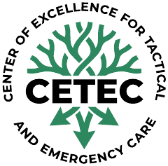

CETEC
Навчаємо · Аналізуємо · Об'єднуємо
Center of Excellence for Tactical and Emergency Care
Центр тактичної та екстреної медицини: підготовка військових і цивільних медиків за міжнародними стандартами, аналіз бойового досвіду, співпраця з партнерськими організаціями.
Education & Training
Lessons Learned & Analysis
Scientific & Educational Events
Сайт у розробці. Повна версія — найближчим часом.
This site is under development. CETEC trains military and civilian medical personnel in tactical and emergency care to international standards.